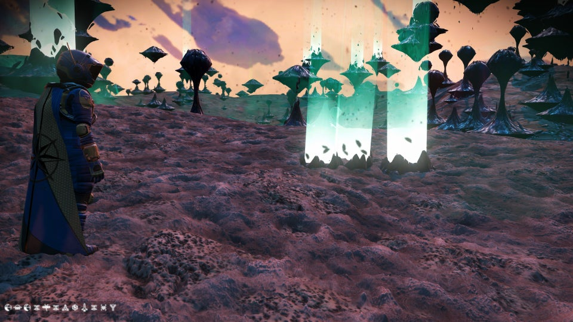
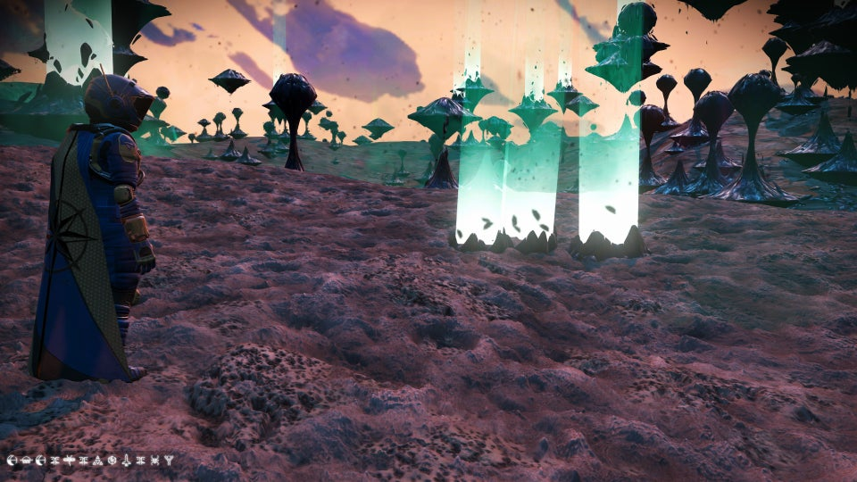

How No Mans Sky Works
All images in this website are credited to Hello Games, 2016The game uses procedural generation to generate the near infinite planets within it. The game has a variety
of assets it can pick, choose, and mix to make planets, with different colours, atmospheres, and properties.
A planet can even have a moon or a ring, like our Saturn. However, No Mans Sky does not save each and every
detail of these planets. Instead, each planet is assigned a "seed", a number which states the information of
the planet, and any player-made objects on it. Every time a planet is revisited, the game simply recalls the
seed of this planet. However, this is one of two numbers assigned to a planet
Each NMS planet is also given their own "coordinate", a set of 12 symbols made from an array of glyphs. When
on a portal, these coordinates function like an IP Address, telling the game which planet to send you to and
the planet's name.
Once you reach this planet, either by simply landing or by portal, you will be able to explore the life and
contents of this world. Each NMS Planet can vary between 50 and 250 KM in diameter. A far cry from the planets
of real life, but very impressive considering there is 18 Quintillion of them. You can explore the seas, collect
data for the game's in-game currency, or establish a base. Usually, one of the 1-10 Planets found in a star-system
in NMS will have a surface level trading post, where you can shop for better items.
But there is more to NMS than just planets. The game also allows you to recruit a ship and a crew to travel
around with you, raid and attack ships with you, or simply help explore. But No Mans Sky is best played with
your friends, where you can complete tasks and explore a vast galaxy with.
The Game also has a sizeble following on social media, with the aspects of the game allowing for this to
flourish. People will often share their findings online, like planets, creations, and ships. This community
allows you to have fun with others in the game if none of your friends are able to play it. An earth
like planet in No Mans Sky, with its coordinates in the bottom left.
 

In conclusion, No Mans Sky is not about complete objectives. It is physically impossible to explore every
world, and the game, perhaps even Humanity, will be long gone before someone can step foot on the final
unexplored world. But No Mans Sky is more about curiosity, exploration, and friendship, across a simulated
universe thousands of times smaller than the real one. When I, and most people, play the game, we are
reminded of the vastness of space, and the infinite complextion it holds. We may never be able to understand
it all, however that is ok. There is enough for us in our own star system. If you can, I would
definetly checking out the game for yourself.